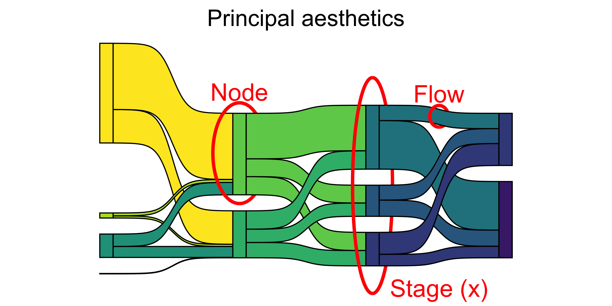

What Time Evolution Charts can we plot?
In these cases, the x-axis is typically time…and we chart the variable of another Quant variable with respect to time, using a line geometry.
Let is take a healthcare budget dataset fromOur World in Data: We will plot graphs for 5 countries (India, China, Brazil, Russia, Canada )

What Space Evolution Charts can we plot?
Here, the space can be any Qual variable, and we can chart another Quant or Qual variable move across levels of the first chosen Qual variable.
For instance we can contemplate Enrollment at a University, and show how students move from course to course in a University. Or how customers drift from one category of products or brands to another….or the movement of cricket players from one IPL Team to another !!
A sankey diagram is a visualization used to depict a flow from one set of values to another. The things being connected are called nodes and the connections are called links.
Sankeys are best used when you want to show a many-to-many mapping between two domains or multiple paths through a set of stages.
